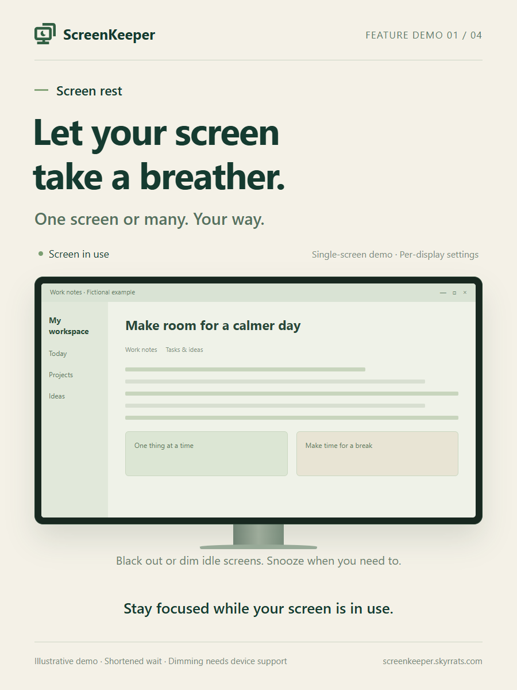
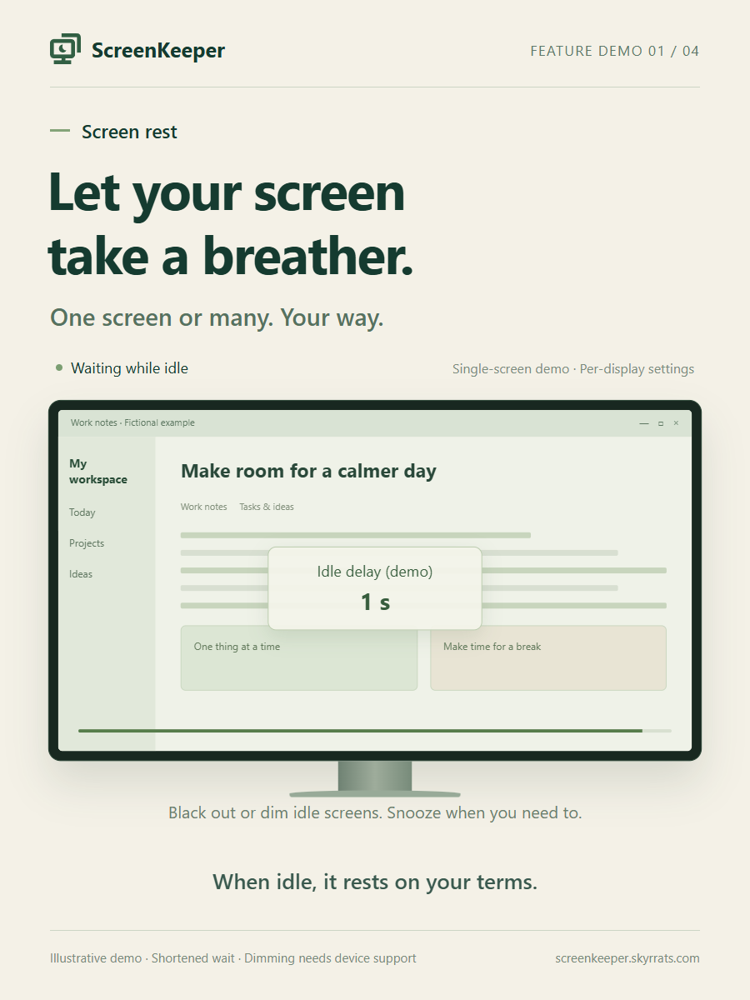
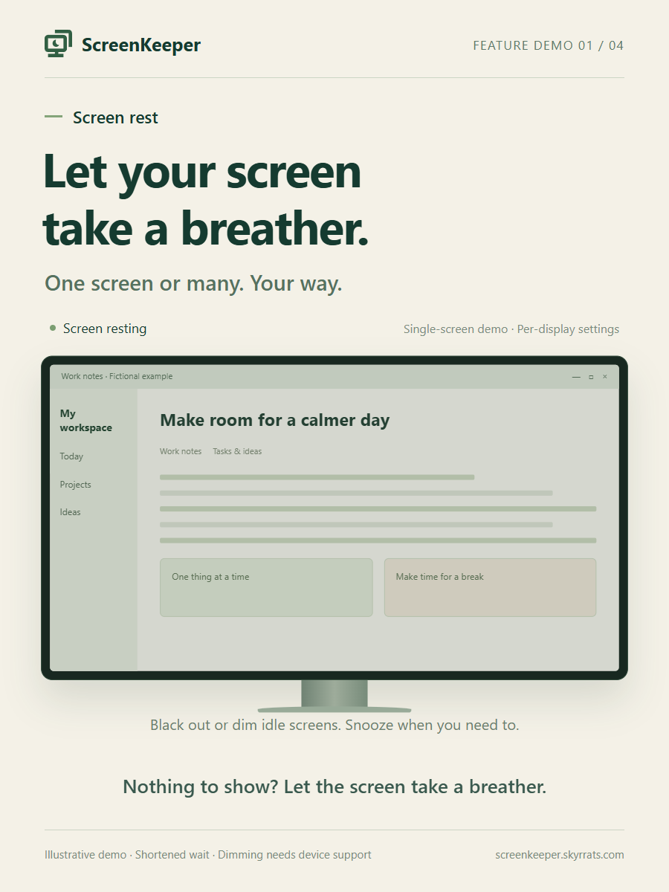
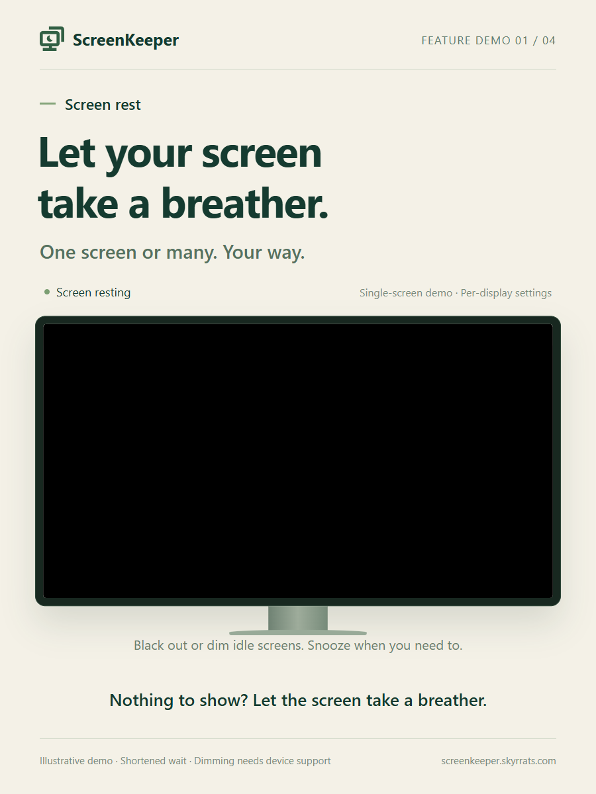
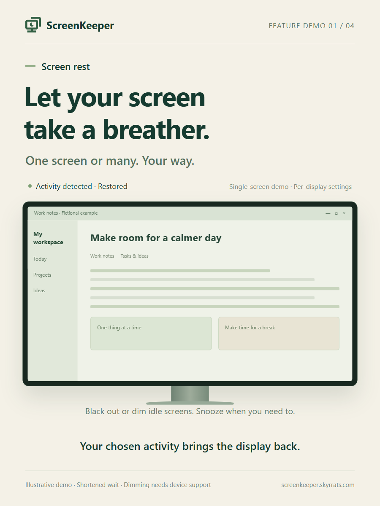

0.30s · Screen in use 2.85s · Screen in use3.15s · Waiting while idle
2.85s · Screen in use3.15s · Waiting while idle
5.85s · Waiting while idle
6.15s · Screen resting
9.20s · Screen resting11.85s · Screen resting12.15s · Screen resting
14.50s · Activity detected · Restored15.85s · Activity detected · Restored16.15s · Screen in use 17.95s · Screen in use
17.95s · Screen in use